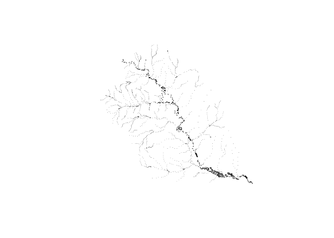

The goal of terrainSliceR is to generate DEM-based cross sections for hydrograhic networks.
Installation
You can install the development version of terrainSliceR from GitHub with:
# install.packages("devtools")
devtools::install_github("mikejohnson51/terrain_sliceR")Example
This is a basic example which shows you how to cut cross sections for a network.
Define Network
library(terrainSliceR)
#> Using GDAL version 3.6.0 which was retracted because it cannot write large GPKG files
library(dplyr)
#>
#> Attaching package: 'dplyr'
#> The following objects are masked from 'package:stats':
#>
#> filter, lag
#> The following objects are masked from 'package:base':
#>
#> intersect, setdiff, setequal, union
(net = linestring %>%
mutate(bf_width = exp(0.700 + 0.365* log(totdasqkm))))
#> Simple feature collection with 325 features and 5 fields
#> Geometry type: LINESTRING
#> Dimension: XY
#> Bounding box: xmin: 77487.09 ymin: 890726.5 xmax: 130307.4 ymax: 939129.8
#> Projected CRS: NAD83 / Conus Albers
#> # A tibble: 325 × 6
#> nhdplus_comid geometry comid totda…¹ dist_m bf_wi…²
#> * <chr> <LINESTRING [m]> <dbl> <dbl> <dbl> <dbl>
#> 1 101 (128525.6 892408.3, 128565.7 892… 1.01e2 7.25e+3 3.25e3 51.7
#> 2 24599575 (128084.7 892952.4, 128525.6 892… 2.46e7 7.25e+3 7.00e2 51.6
#> 3 1078635 (127687.6 893270.4, 127799.7 893… 1.08e6 7.25e+3 5.22e2 51.6
#> 4 1078637 (124942.8 893959.6, 124948.2 893… 1.08e6 6.82e+1 4.17e3 9.41
#> 5 1078639 (125523.1 892528, 125657.3 89270… 1.08e6 7.18e+3 2.76e3 51.5
#> 6 1078577 (123219.9 902292.8, 123233.5 902… 1.08e6 1.98e+1 9.91e3 5.99
#> 7 1078575 (121975.5 909050.8, 122028.9 909… 1.08e6 4.13e+1 1.87e4 7.83
#> 8 1078657 (124263.8 892410.4, 124420.6 892… 1.08e6 7.18e+3 1.66e3 51.5
#> 9 1078663 (125628.9 892216, 125555.7 89220… 1.08e6 9.9 e-2 7.54e2 0.866
#> 10 1078643 (124248.1 892440.7, 124263.8 892… 1.08e6 7.18e+3 3.41e1 51.5
#> # … with 315 more rows, and abbreviated variable names ¹totdasqkm, ²bf_width
plot(net$geometry)
Cut cross sections
(transects = cut_cross_sections(net = net,
id = "comid",
bf_widths = pmax(50, net$bf_width * 7),
num = 10) )
#> Simple feature collection with 2250 features and 4 fields
#> Geometry type: LINESTRING
#> Dimension: XY
#> Bounding box: xmin: 77510.14 ymin: 890557.3 xmax: 130371.3 ymax: 939089
#> Projected CRS: NAD83 / Conus Albers
#> # A tibble: 2,250 × 5
#> geometry hy_id bf_width cs_id lengthm
#> * <LINESTRING [m]> <dbl> <dbl> <int> <dbl>
#> 1 (128426.4 892244.6, 128705 892475.1) 101 362. 1 362.
#> 2 (128409.2 892093.2, 128767.5 892044.3) 101 362. 2 362.
#> 3 (128557.6 891564.6, 128896.1 891691.9) 101 362. 3 362.
#> 4 (128851.5 891197.9, 129153 891397.4) 101 362. 4 362.
#> 5 (129225.4 890883, 129345.8 891224) 101 362. 5 362.
#> 6 (129625.9 891067.1, 129390.2 891341.3) 101 362. 6 362.
#> 7 (129792.9 891147.7, 129656.7 891482.7) 101 362. 7 362.
#> 8 (129904.4 891131.2, 130211.5 890940.4) 101 362. 8 362.
#> 9 (130243.6 890557.3, 130371.3 890895.6) 101 362. 9 362.
#> 10 (128385.2 892294.5, 128666.1 892522.1) 24599575 362. 1 362.
#> # … with 2,240 more rows
plot(transects$geometry)
Define Cross section points
(pts = cross_section_pts(transects,
dem = '/Volumes/Transcend/ngen/DEM-products/dem.vrt'))
#> Simple feature collection with 23234 features and 8 fields
#> Geometry type: POINT
#> Dimension: XY
#> Bounding box: xmin: 77510.36 ymin: 890570.3 xmax: 130366.4 ymax: 939087.3
#> Projected CRS: NAD83 / Conus Albers
#> # A tibble: 23,234 × 9
#> hy_id cs_id pt_id Z lengthm relative_distance bf_width points_per_cs
#> <dbl> <int> <int> <int> <dbl> <dbl> <dbl> <dbl>
#> 1 101 1 1 4396 362. 0 362. 13
#> 2 101 1 2 4422 362. 30.1 362. 13
#> 3 101 1 3 4318 362. 60.3 362. 13
#> 4 101 1 4 4209 362. 90.4 362. 13
#> 5 101 1 5 4086 362. 121. 362. 13
#> 6 101 1 6 3754 362. 151. 362. 13
#> 7 101 1 7 3717 362. 181. 362. 13
#> 8 101 1 8 3760 362. 211. 362. 13
#> 9 101 1 9 4268 362. 241. 362. 13
#> 10 101 1 10 4427 362. 271. 362. 13
#> # … with 23,224 more rows, and 1 more variable: geometry <POINT [m]>Classify Cross section points
(classified_pts = classify_points(pts))
#> Simple feature collection with 23234 features and 7 fields
#> Geometry type: POINT
#> Dimension: XY
#> Bounding box: xmin: 77510.36 ymin: 890570.3 xmax: 130366.4 ymax: 939087.3
#> Projected CRS: NAD83 / Conus Albers
#> # A tibble: 23,234 × 8
#> hy_id cs_id pt_id Z relative_di…¹ bf_wi…² class geometry
#> <dbl> <int> <int> <dbl> <dbl> <dbl> <chr> <POINT [m]>
#> 1 101 1 1 4396 0 362. left… (128437.2 892253.4)
#> 2 101 1 2 4379. 30.1 362. left… (128458.6 892271.2)
#> 3 101 1 3 4316. 60.3 362. left… (128480 892288.9)
#> 4 101 1 4 4204. 90.4 362. left… (128501.4 892306.6)
#> 5 101 1 5 4016. 121. 362. chan… (128522.9 892324.3)
#> 6 101 1 6 3852. 151. 362. chan… (128544.3 892342.1)
#> 7 101 1 7 3717 181. 362. bott… (128565.7 892359.8)
#> 8 101 1 8 3915 211. 362. chan… (128587.2 892377.5)
#> 9 101 1 9 4152. 241. 362. chan… (128608.6 892395.3)
#> 10 101 1 10 4376 271. 362. chan… (128630 892413)
#> # … with 23,224 more rows, and abbreviated variable names ¹relative_distance,
#> # ²bf_widthExplore!
library(ggplot2)
ggplot(data = filter(classified_pts, hy_id == 101) ) +
geom_point(aes(x = relative_distance, y = Z, color = class)) +
facet_wrap(~cs_id, scales = "free") +
theme_minimal() +
theme(legend.position = "bottom")
Time to get 2250 transects and 23234 classified points …
system.time({
cs = net %>%
cut_cross_sections(id = "comid",
bf_widths = pmax(50, net$bf_width * 7),
num = 10) %>%
cross_section_pts(dem = '/Volumes/Transcend/ngen/DEM-products/dem.vrt') %>%
classify_points()
})
#> user system elapsed
#> 10.455 0.235 10.985